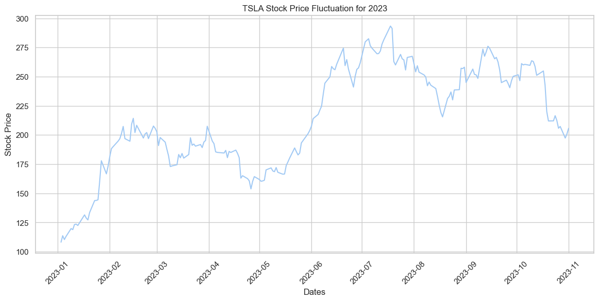

Conclusions
Data Gathering: I utilized several sources to collect a diverse set of data, working with both text and record data to apply different machine learning algorithms. In hindsight, a larger dataset might have yielded more fruitful results. Nevertheless, I gained significant knowledge about web scraping methods for text data collection and the use of APIs for data gathering.
Data Cleaning: This is an iterative process and I learned its importance quite a bit through the experience of building the project. While cleaning the data it’s absolutely necessary to ensure that the integrity is maintained. If data is not cleaned properly, several issues may arise later on while appyling different kinds of ML algorthims to the data at hand.
Data Exploration: This is my personal favorite stage in the Data Science lifecycle. Several insights and visualizations were genrated during this stage. Exploring the data uncovers many interesting facts and helps generate a more informative narrative to the data storytelling process.
Naïve Bayes: Using python to carry out the naive bayes algorithm on both text and record data was hugely educational. It was interesting to get practical, hands on experience on training a model based on the naive bayes theory and observe how well it performs with unseen data.
Dimensionality Reduction: Observing how efficiently both PCA and t-SNE performs dimensionality reduction while preserving essential information was a highlight of the portfolio creation process. I was able to perform the two metholodogies and then create a comparison report for them both.
Clustering: Kmeans, dbscan and hierchical clustering all showed clear groupings within the dataset that were used to perform the clustering analyses. This helped observe the common characteristics amongst the automobile vehicles that are grouped together and the difference amongst the ones which are grouped farther apart.
Decision Trees: Performing the classfication and regression decision trees unraveled how well the datasets I collected perform with the decision tree algorithms provided by scikit-learn. It is an useful method of grouping text data and visualize the context within which certain keywords are being utilised.
ARM: Yet another extremely beneficial algorithm when it comes to finding patterns in text data. The findings from this algorithm and how different words are connected was very insightful. Though this is a computationally intensive process and my result was likely not the most optimal one, it was still great to learn from the outcome.
Additionally…
While the initial questions may still require further analysis to provide strong, evidence-based answers to, applying machine learning algorithms at different project phases has revealed numerous trends and patterns. Although there is room for fine tuning and making adjustments, the insights gained at this stage are already beneficial and clearly demonstrate how they can aid businesses in making better, data-driven decisions.
Throughout the process of closely following the Data Science Lifecycle to analyze the EV market, several key insights were discovered. Let’s revisit some of the visualizations from the various analyses carried out so far:
Stock Prices Graph
This graph was generated from data gathered from Yahoo!
The visual representation of the stock performance of EVs, illustrating their rise to surpass market leaders like Toyota, followed by their subsequent slump, and then their quick recovery, was one of the most insightful outcomes of the project.
Word Cloud
This was generated using the text data gathered from News API.
Some prominent words:
- EV: This stands for ‘Electric Vehicles’ and it makes sense that this is one of the most commonly found terms within the dataset
- Tesla: We have closely followed their market journey via share market. As one the early pioneers of the EV industry and mainstream manufacturers of EVs, it is understandable that their name appears commonly whenever their is a conversation about electric vehicles.
- Electric: this is the type of vehicles I was interested in learning more about
- will: not sure what this one means… maybe the future tense?
- Lucid: An up and coming EV OEM. Them showing up in news articles about EVs is testament to the fact that they are making strong strides in the market.
Tesla Stock

Since Tesla is the most dominant company when it comes to EVs, it was interesting explore how their stocks performed over the course of this year.
Tesla VS. GM

In 2023 Tesla performed consistently better than GM stocks. Further market analysis could be performed to understand the cause. However, this comparison highlights just how much in demand EVs, in particula Teslas, currently are.
Tesla/STLA Correlation
This was an interesting finding, a positive correlation between the stock prices of Tesla and Stellantis. Correlation does not mean causation, hence there is no definite reason behind this phenomenon, but an interesting observation nonetheless.
Correlation amongst various OEMs
Taking a broader look at the correlation amongst different OEMs and it seems like some brands have positive correlations while others do not.
Sentiment Analysis
Text data for generating this graph was collected from News API.

This was an outcome during the phase of performing ARM. In general sentiment regarding EV is positive which is a great conclusion. This provides strong evidence that EV is leaving a positive impact.